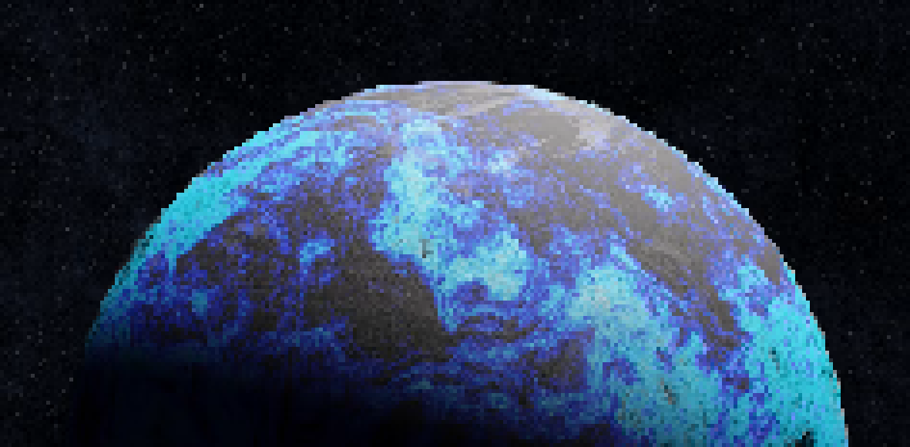

Janitor stew's Nexus Lines documentation website
Welcome to the documentation website I made to be able to stock any
and all informations related to my OC's and the story pivoting around
them dubbed "Nexus Lines"
Here you may find the following elements:
* Documentation
* Character sheets and references
* Litterature and lore about the world surrounding the characters
The Nexus is a branch of multiple inter-astral lines connected into
one another, creating events and disturbance once they collide or get
in contact, the UDA (Which is a united alliance of the stars, well
known for its leaders considered as gods and upper dieties by some)
The eight pillars consisting of 8 roles and orders to the alliance
and the cosmos order:
- Ortus- The creator, the beggining, the start.
- Gibel- The destructor, the 'second’ the cursed one, often representing death and calamity. (KUSAVA)
- Omnix- The watcher. (FUJINA)
- Metis- The Knowledge and Wisdom.
- Valeth- The Order.
- Renn- The pioneer.
- Aelys- The stellar strategist.
- Novos- The engineer and technological prowess.
